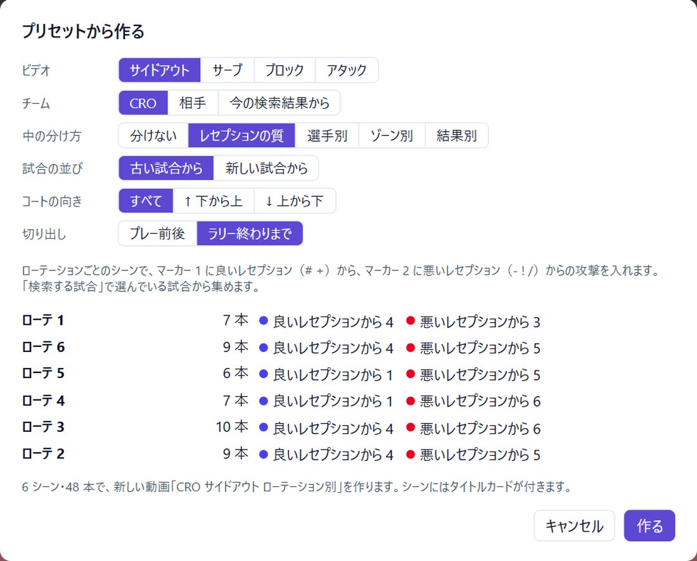
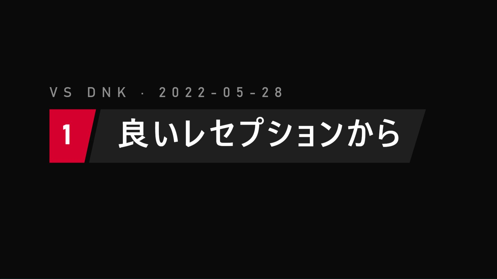

動画・シーン・マーカー。
層ごとに答える問いが 1 つあります。動画は「今日は何を見せるか」。シーンは「どのテーマか」。マーカーは「そのテーマの中の、どんなプレーか」。クリップはプレーそのものです。
クリップ: 1 つのプレースライド: クリップの間に入る止まった 1 枚
-
動画
書き出して、ミーティングで流すもの。シーンを決めた順に並べます。配色・スコアボード・テロップ・タイトルカードは動画ごとの設定です。1 つのプロジェクトに動画はいくつでも作れます。選手向けと、スタッフ向けの短いものを分けることもできます。
-
シーン
1 つのテーマ。ローテ、選手、相手セッターなど。同じシーンを複数の動画に入れられ、クリップを 1 回直せば、そのシーンを使うすべての動画に反映されます。
-
マーカー
シーンの中の、色分けされた最大 5 つのグループ。名前と、それぞれのタイトルカードを付けられます。プレーの行で 1〜5 を押すと、そのマーカーに入ります。1 本のクリップに 2 つのマーカーを付けることも、クリップを残したままマーカーをオフにすることもできます。
-
クリップ
スカウトファイルの 1 つのプレーを、その前後で切り出したもの。トリム、スロー、止め、図形を入れられます。クリップの間には、止まった 1 枚の画面としてスライド（コマ・PDF のページ・データスライド）を入れられます。
スカウトファイルから MP4 まで。
試合は倉庫に 1 回入れるだけ。あとはすべてそこから使うので、来週の動画も同じファイルから始められます。
- 倉庫試合ごとに、動画と .dvw / .vsm を 1 回だけ取り込む。
- プロジェクト自チームと使う試合を選ぶ。シーズンが進んだら試合を足す。
- 検索その試合のすべてのプレーを、選手・スキル・ローテ・ゾーン・コールで絞り込む。
- シーンプレーの行で 1〜5 を押してそのマーカーに入れる。結果をまとめて入れることも。
- 動画シーンを並べ、マーカーに名前を付け、タイトルカードを出し、スライドを入れる。
- 書き出し動画全体・シーンごと・1 シーン・1 マーカーを、チャプター付きの MP4 に。
時間がないときは「プリセットから作る」で、ローテ別・選手別・ミドル別のシーンと、レセプション別・結果別のマーカーを持つ動画を 1 回で作れます。あとから何でも直せます。
サイドアウトの動画を、層ごとに。
コーチは、ローテごとのサイドアウトと、パスが乱れたときに何が変わるかを見せたい。

- 動画 1 本「CRO サイドアウト」。最初にタイトルカード。
- シーン 6 つローテごとに 1 つ。選手は 1 ローテずつ見られます。
- 各シーンにマーカー 2 つマーカー 1 は「良いレセプションから」、マーカー 2 は「悪いレセプションから」。それぞれタイトルカードから始まります。
- クリップアタックそのもの。スコアボード、アタッカーのテロップ、落ちた場所が描かれます。

DataVolley・VolleyStation が記録し、このアプリが伝える。
スカウトはいつもどおりに。アプリは DataVolley や VolleyStation が書き出す .dvw / .vsm を読み、その先の「記録したプレーを、選手のための動画にする」ところを受け持ちます。
プレイリスト
試合の順に、プレーが 1 本ずつ続く。机の前で何かを探すアナリストに向いています。
動画
テーマごとにまとまり、タイトルが付き、伝えたいことが描かれている。1 回見て分かる必要がある、ミーティングの選手に向いています。
| DataVolley / VolleyStation | SyncScout Video Editor | |
|---|---|---|
| 役割 | 試合をスカウトし、分析する | 記録したプレーを、選手のための動画にする |
| 使う時 | 試合中と試合直後 | ミーティングの前 |
| スカウトファイル | .dvw / .vsm を書き出す | それを読む（入力し直しは不要） |
| 映像 | 記録したプレーを探して再生する | シーン・マーカー・タイトルカード・スライドで動画を組み、データをコートに描く |
| 出てくるもの | 集計、レポート、プレイリスト | チャプター付きの MP4、PNG / PDF のスライド |
このアプリはスカウトをせず、両者の代わりにもなりません。動かすには両者のファイルが必要です。DataVolley と VolleyStation は、それぞれの所有者の商標です。
最初の動画を作ってみる
Windows 版を公開中。Mac 版は準備中です。